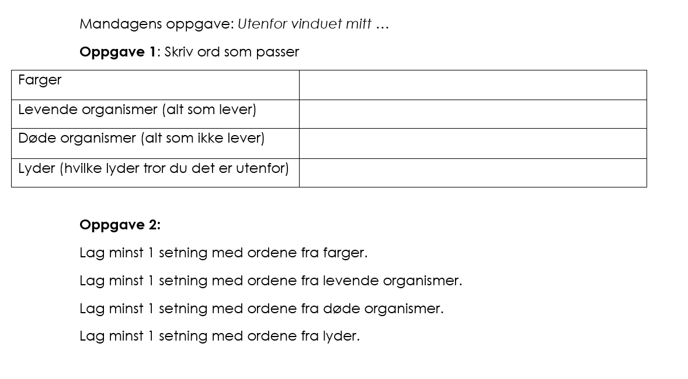
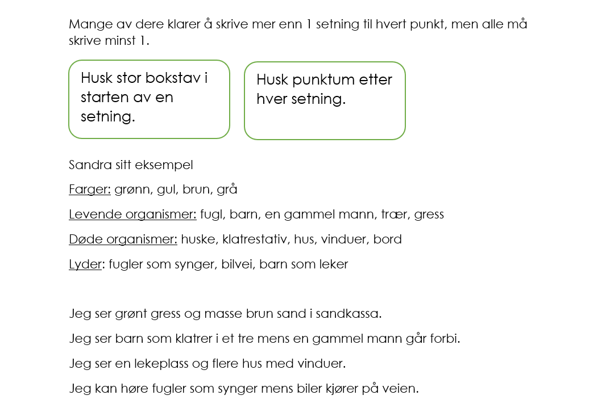
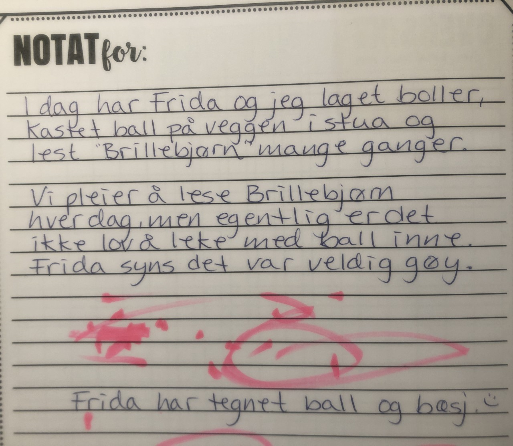

Nyheter

Alarmtelefon for barn og unge
Alarmtelefon for barn og unge er en nødtelefon for barn og unge. Det finnes 15 store barnevernvakter i Norge. Det er de som svarer når du ringer 116 111 i deres åpningstid. 116 111 er gratis, døgnåpen og blir besvart av voksne med lang erfaring i å hjelpe barn og unge.
02.04.2020
Torsdag
Hei 3b!
​Dagens oppgave er en mattenøtt som vi har lånt fra Frk Linn. Frøken Linn er en lærerblogg med mange morsomme oppgaver. Her er en som vi syntes passet godt til påske.
Hilsen Marte og Sandra

Her er noen filmer som kanskje kan hjelpe deg hvis du har begynt med oppstilling i matteboka.
Addisjon med veksling - del 1
Addisjon med veksling - del 2
Subtraksjon med veksling - del 1
Subtraksjon med veksling - del 2
01.04.2020
Onsdag
Hei igjen 3b!
​Farger kommer frem nå som det er vår og veldig snart er det påske og det er gult over alt. Dagens oppgave handler om FARGER.
Gul, rød og blå er noe vi kaller primærfarger. Primærfargene kan du se i de andre fargene. Gul+rød blir orange, rød+blå blir lilla og blå+gul blir grønn. Når man blander primærfargene til andre farger får man farger som kalles sekundærfarger.
Dagens oppgave er å lage en sirkel med gjenstander i primærfarger og sekundærfarger. Finn så mange ting i fargene som du klarer og legg de i en sirkel. Se på bildene for å finne ut hvilke farger som kommer etter hverandre. Start med primærfargene GUL, RØD og BLÅ og legg inn sekundærfargene ORANGE, LILLA og GRØNN etterpå.
Ta gjerne bilde av sirkelen med ting og send til oss üôÇ
Hilsen Marte og Sandra
Film om ukas ord
31.03.2020
God morgen!
Her er tirsdagens oppgave:
Forrige helg var Claire, læreren i 3c på tur. På turen så hun noe kjemperart. En sparkesykkel i et
tre over Akerselva. Hun ble veldig nysgjerrig på hvordan den havnet der! Dagens oppgave er å
skrive en fortelling om hvordan sparkesykkelen havnet i treet. Overskriften er "En sparkesykkel i
treet" og i teksten din vil vi at du skal svare på disse spørsmålene:
- Hva ser du?
- Hva har skjedd?
- Hvem sin sparkesykkel er det?
- Hvordan tror du at den havnet i treet?
Husk punktum og stor bokstav når du skriver. Det er også veldig lurt å lese gjennom det du har skrevet før du sender det til oss. Kanskje oppdager du en skrivefeil? Vi gleder oss til å lese fortellingene deres!
Her er Arwens fortelling om sparkesykkelen:
En sparkesykkel i treet
Det var en gang et barn som het Andrea. Andrea hadde en sparkesykkel som hun elsket. En dag så dro hun på tur langs Akerselva. Andrea tok med seg sparkesykkelen da hun skulle klatre opp i et tre. Andrea hadde veldig god fantasi. Hun tenkte at hvis hun bare tok stor nok fart kunne hun sparkesykle videre oppover treet. Men da hun skulle til å ta fart ramla hun ned fra treet og sparkesykkelen ble hengende igjen. Da Andrea landet, landet hun med et stort plask rett i elva. Heldigvis var det ingen krokodiller i elva. Det var bare snille fisker og sjøhester. Snipp snapp snute så var eventyret om sparkesykkelen ute.
30.03.2020
Hei 3b!
Ny ukeplan og ukemail er nå lagt ut under "UKEPLAN"-lenken i menyen. For å kunne trykke direkte på lenkene i ukeplanen må du laste den ned først.
Dagens oppgave
 Oppstilling!
Noen ganger skal man legge sammen veldig høye tall. Hvis du skal legge sammen 452 og 835 kan det være vanskelig å regne det i hodet. Det er også litt tungvint å dele det opp som for eksempel 400+800+50+30+2+5. Heldigvis finnes det en lettere måte. Du kan sette opp tallene under hverandre. Her er en film av hvordan det gjøres. Du finner oppgave fra side 26 i matteboka vår.
Oppstilling addisjon
Oppstilling subtraksjon
Tekstoppgave med oppstilling
Tips fra læreren
TEGNEKONKURRANSE - Norli Junior
Norli Junior Lesekonkurranse gjennomfører en ekstrautgave, for å motivere til lesing under Korona-karantenen. 1.-10. klasser er velkommen til å bli med. Konkurransen er åpen fra 19. mars - 30. april. Det kan bli endringer i varighet, avhengig av hvordan situasjonen utvikler seg.
www.norlijunior.noSe også Norlis lesekonkurranse: www.norlijunior.no/?konkurranse
Her har dere noen ekstra oppgaver!

27.03.2020
Hei 3b!
I dag er det fredag!! I dag vil vi gjerne at du forteller om noe du har gjort hjemme. Kanskje har du hjulpet til med noe, gjort husarbeid? Du kan gjerne skrive en tekst om noe du har gjort, tegne en tegning av det eller begge deler. Her har Sofi, Arwen og Hel tegnet en tegning av noe de har gjort og hjulpet til med. Si fra hvis du vil at vi skal legge ut teksten eller tegningen din på nettsiden vår.
God helg!!!


26.03.2020
Hei 3b!
Det er torsdag og dagens oppgave best√•r av en rebus. Om du løser rebusen riktig, kommer du frem til en setning som forteller deg hva du skal gjøre videre i oppgaven. Ta gjerne bilde og send tilbake n√•r du har løst den üôÇ
25.03.2020
Hei 3b!
Her er dagens oppgave:
I går, tirsdag, feiret vi at Sofi ble 9 år. Under kan du se et bilde av ballongen vi hadde hengt opp. Til jul har en av lillesøstrene hennes bursdag. Da kan vi bruke den samme ballongen på en annen måte. Hvilket år fyller lillesøsteren?
Vi gleder oss til løsningen din!
Hvis du følger ukeplanen ser du at du skal jobbe med dagens tall i dag. Lenger ned på nettsiden ser du en film av hvordan vi har gjort det hjemme hos Marte.
Ha en fin dag alle sammen!
24.03.2020
Opp og hopp og god morgen 3b
Dagens oppgave er å skrive om en ting du har gjort hjemme. Kanskje du har gjort noe du ikke pleier å gjøre eller har du sett noe du syns var morsomt? Tegn en tegning til teksten du har skrevet og send til oss. Si ifra om du vil at vi skal legge ut tegningen på nettsiden vår.
Hilsen Marte og Sandra
23.03.2020
Hei 3B!
Nå er det mandag igjen, og vi håper alle er klare for en ny uke med hjemmeskole. Oppgaven i dag er å lese 15 minutter høyt på et rart sted. Les for en voksen, et søsken, et kosedyr eller kanskje du vil ringe til noen. Du velger selv hva du vil lese. Ta gjerne et bilde av at du leser eller tegn en tegning av det og send det til oss. Hvis du vil at vi skal legge ut bildet eller tegningen din på nettsiden er det bare å si fra.
Her er et bilde av Sofi som har satt seg et rart sted for å lese.
Vi skrives üôÇ

21.03.2020
Hei alle sammen!
En annerledes skoleuke er forbi og vi vil takke dere alle for støtten og oppfølgingen dere gir barna i disse tider. Fredagsoppgaven med hvilket bilde som skulle ut har mange svart på og det er veldig gøy å lese de forskjellige forklaringene dere har hatt på oppgaven. Dette er noen av svarene som har kommet inn:
- kongla skal ut fordi den ikke starter på B.
- babyen skal ut for det er den eneste med øyne.
- kongla skal ut for den er den eneste som ikke kan komme seg fremover
- bussen skal ut fordi det er den eneste maskinen
Neste uke blir ganske lik som denne uka. Ukeplanen er sendt ut med oppgaver og vi håper mange får til å gjøre noe i løpet av uka. Samtidig sender vi hver dag ut en oppgave som vi vil at alle sender oss svar på. Kanskje holder det med denne oppgaven hver dag og det syns vi er helt greit.
Denne uka har mange svart oss på Mail eller SMS med bilder og video. Det setter vi stor pris på! Vi ønsker å høre fra dere hver dag for å vise at vi er tilgjengelige og for å vite at dere alle har det så bra dere kan ha det i denne situasjonen.
Mandag mottar dere ny oppgave. Ta kontakt med oss om det er noe og husk å sjekke nettsiden vår :)
God helg fra Marte og Sandra
20.03.2020
Hei 3B
I dag er det fredag og siste oppgave denne uka er:
Hvilket bilde tror du skal ut?
Se på bildene og skriv tilbake på mail eller SMS hvilket bilde du mener skal ut og hvorfor. Vi har gjort denne øvelsen i ukas ord-timen, så håper du får det til. Vi håper dere får en fin helg og gleder oss til å se dere igjen.
Hilsen Marte og Sandra
19.03.2020
Hei 3B
I dag er det torsdag og vi håper dere har det bra! Vi er veldig glad for at dere sender oss mailer, meldinger og bilder. Dagens oppgave er å lese ukas tekst høyt, se mandag på ukeplanen. Her er en filmsnutt av hvordan vi leste ukas tekst hjemme hos Marte. Du kan gjerne lese for en voksen, et søsken, en bamse eller for deg selv. Send oss gjerne en film eller et bilde av at du leser. Har du ikke Salto B kan du finne en annen tekst.
Vi har brukt BOK-metoden når vi leser, Bilde Overskrift Kursiv. Som dere hører på filmene er det hjemmekontor, hjemmebarnehage og hjemmeskole på en gang.
18.03.2020
God morgen 3b. I dag er det onsdag og dagens oppgave er:
P√• en bondeg√•rd bor en familie p√• 2 voksne og 2 barn. I fjøset bor 1 ku, 1 okse, 3 sauer og 4 griser. Den ene grisen har 2 grisunger. I hønsehuset bor det 13 høner. Hvor mange bein er det til sammen p√• bondeg√•rden? Tips: tegn og tell beina Send gjerne bilde av tegningen du tegner. Skriv hvordan du har tenkt for √• løse oppgaven sammen med svaret ditt, tilbake til oss. Her ser du Frida som lager kongledyr til bondeg√•rden vi har laget üôÇ

17.03.2020
Hei 3b! I dag er det tirsdag og dagens oppgave er å skrive om en ting du har gjort hjemme. Du kan gjerne sende teksten til oss på mail eller ta et bilde av den å sende den på sms. Hvis du har mulighet og lyst er det veldig hyggelig om du legger ved et bilde av noe som passer til teksten. Her er Martes tekst om noe hun har gjort hjemme:
Familiemøte
Skolen er stengt. Barnehagen er
stengt.
Jobben er stengt. Nå er vi hjemme alle sammen. Nå er vi to voksne og tre barn inne i en
leilighet. Vi
må ha et familiemøte!! På torsdag ettermiddag satt vi oss ned alle 5 for å snakke om de neste
ukene. Vi
ble enige om at nå må alle hjelpe til litt ekstra. Hele familien var enige om at alle må hjelpe
hverandre å rydde, de voksne må få sove litt på morgenen og barn må få lov til å se litt mer på
TV enn
vanlig. I tillegg må vi huske på å være litt ekstra hyggelige med hverandre. Vi avtalte også at
alle må
være stille når det er nyheter.
Her er et bilde av at vi sier tommel opp til alt vi avtalte på møtet.

PS: Dersom du har mulighet til å gjøre mer enn dette kan du se på ukeplanen for å få flere forslag til aktiviteter.
16.03.2020
Oppgave mandag uke 12
Mandagsoppgaven: les 15 minutter høyt for en voksen, et søsken, et kosedyr, et kjæledyr. Sitt under et bord mens du leser. Ta gjerne bilde og send tilbake.
Dagens tall!
Kanskje passer det deg bedre å gjøre dagens tall enn oppgaver fra Radius, eller kanskje passer begge deler. Bruk det gjerne om du vil. Kanskje kan dagens dato være dagens tall? Eller kanskje noen hjemme kan komme med et forslag til tall? På skolen har vi valgt ut et tall mellom 1 og 50 når vi har gjennomgått denne måten å jobbe på.